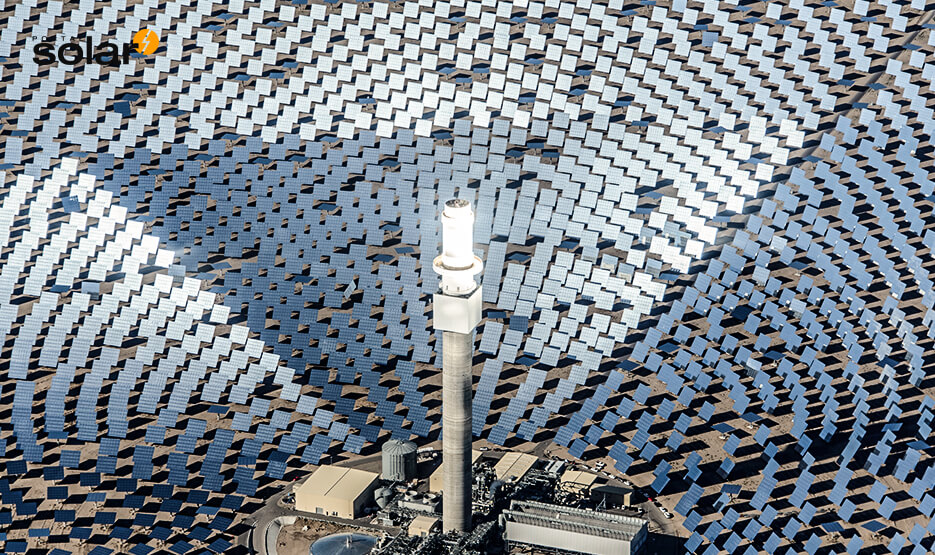
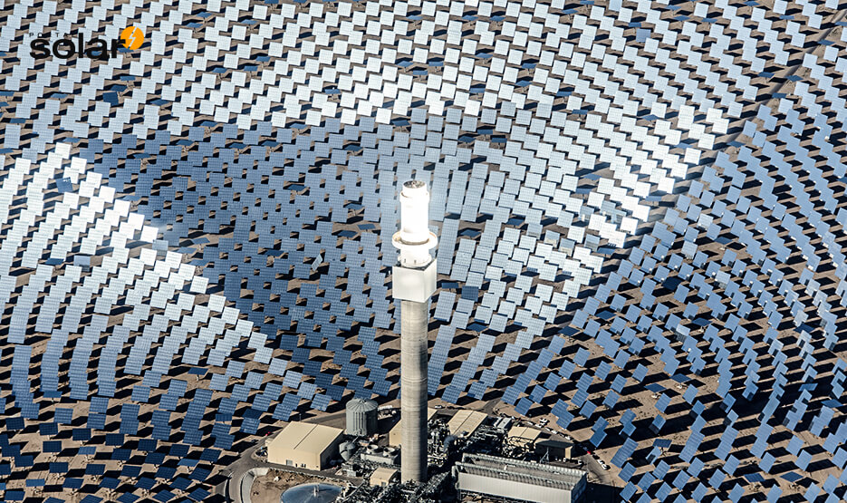

O que é energia solar? Tudo o que você precisa saber
Em resumo, a energia solar é a energia proveniente da luz e do calor do sol, sendo uma fonte alternativa e sustentável que pode ser utilizada tanto para geração de eletricidade (pelos sistemas de energia solar fotovoltaica e heliotérmica) quanto para aquecimento de água (com os aquecedores de energia solar térmica).
O que é energia?
A energia é um conceito amplo que pode ter diversas aplicações em várias áreas do conhecimento. Quando falamos de energia elétrica, trata-se da forma mais utilizada no mundo para alimentar equipamentos. Ela é originada da energia potencial elétrica, o que permite estabelecer uma corrente elétrica entre dois pontos
Qual a definição de energia solar?
A energia solar é uma fonte alternativa, renovável e sustentável de energia que provém da radiação eletromagnética (luz e calor) emanada diariamente pelo sol. Essa energia pode ser utilizada por diferentes tecnologias, como aquecedores solares, painéis fotovoltaicos e usinas heliotérmicas (ou termossolares).
Hoje em dia, o conceito de energia solar é comumente associado à geração limpa de eletricidade pelos painéis de energia fotovoltaica (painéis fotovoltaicos), que transformam a luz do sol diretamente em energia elétrica.
Na energia solar fotovoltaica, quando as partículas de energia da luz do sol (fótons) incidem sobre os painéis solares, ocorre a geração de uma corrente elétrica que pode ser direcionada e utilizada para alimentar residências, empresas e indústrias, tanto na cidade quanto em áreas rurais.
Para que serve a energia solar?
A energia proveniente do sol é indispensável para a manutenção da vida na Terra e serve como catalisadora de todos os processos térmicos, dinâmicos e químicos, sejam eles naturais (como a fotossíntese ou o ciclo hidrológico) ou artificialmente desenvolvidos pelo homem.
Desde as primeiras civilizações, o homem também utilizava a energia solar para realizar diferentes trabalhos, como a geração de fogo através do calor dos raios de sol concentrados por meio de vidros ou espelhos.
Hoje, a energia solar representa para o homem a sua maior e mais segura fonte de energia renovável para a geração limpa de eletricidade e calor, sem grandes impactos ao meio ambiente e com grande capacidade de aproveitamento.
 
